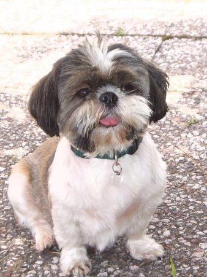

about me
 Software:
Software:
Torta
Karmack
Plata
FUmanchu!
Rants:
AboutMe
Blogging
El origen del hombre americano
Propositos2006
Propositos2007
SWFing
Pictures:
Sicilia -
thumbs
Visita Dimo 2007 -
thumbs
Tokyo -
thumbs
Barcelona -
thumbs
Lisbon -
thumbs
Gilberto Gil -
thumbs
Visita Fidel -
thumbs
Hiver -
thumbs
Dogs -
thumbs
Italy -
thumbs
Eurockeennes -
thumbs
Grenoble -
thumbs
Chipie -
thumbs
Place aux Herbes -
thumbs
Eek Friends:
 Alejo Alejo
Javier
Nelson
Old Posts:
Archive
Created with:
emacs
bash
libXSLT


 Dimo's Art
Quebec Hispano
Dimo's Art
Quebec Hispano
|
|
2005 - August |

Otro post más sobre Google Talk [1][2].
Es excelente que un protagonista de internet con la influencia de Google haya decidido usar un protocolo cuya especificación es pública y cuyo desarrollo es abierto. Esto limita el poder que tiene los proveedores del servicio sobre los usuarios, ya que estos últimos pueden usar el programa que mas les convenga.
Invito a todos a que usen Google Talk, mi ID en gmail es sergio.garcia
|
|

Mañana a las 5:00 AM partó en dirección de la Bretaña profunda. TOLTalk quedará sin actualizar hasta mi regreso, en una semana.
|
|

En el pasado he dicho que me gusta el modelo de desarrollo de software en el cual múltiples participantes crean de manera independiente programas que ofrecen funcionalidades complementarias y que sumadas pueden verse como una sola aplicación. En particular este modelo me parece adecuado cuando se trata de programas cuya naturaleza hace preferible que exista una instancia única del programa en ejecución (como es el caso de TOL, o gran parte del llamado "software social"). Por invitación de Alejo, intentaré explicar las razones que me inclinan a pensar que, en muchos casos, crear mecanismos que fomenten este modelo de desarrollo es mas fructífero que concentrarse en el desarrollo de un cuerpo de código único.
Para empezar, listaré algunas de las razones para preferir el desarrollo de una base de código única sobre el desarrollo de la misma aplicación como múltiples programas:
- La ejecución de la aplicación como un solo programa evita el tener que replicar cálculos costosos. Las aplicaciones desarrolladas como un conjunto de programas deben frecuentemente no solo repetir una misma operación sino también pagar el costo de la comunicación entre las diferentes partes.
- Aunque nada impide que múltiples programas compartan librerías, lo mas probable es que el tener un conjunto único de fuentes redunde en una mayor reutilización de código.
- La interfaz de usuario de una aplicación implementada como un programa único tiende a ser superior. El hecho de que cada módulo del programa tenga acceso fácil a todos los datos tratados por la aplicación facilita el desarrollo de interfaces de usuario donde las diferentes partes se perciben como mejor integradas.
Las razones que me inclinan a preferir en muchos casos el gastar energía facilitando un desarrollo descentralizado tienen más que ver con intuiciones de orden social y psicologico que con otra cosa. A grandes rasgos, estas razones son las siguientes:
-
Bajo costo de entrada para nuevos programadores. Comenzar a trabajar sobre el código existente de una aplicacion medianamente compleja puede ser una tarea demasiado larga y desmoralizadora para muchos programadores. El costo de entender la aplicación puede sumarse al costo de aprender un nuevo lenguaje o incluso un nuevo sistema operativo. A la larga, claro, trabajar sobre un programa ya existente implica menos trabajo ya que una vez superados los obstáculos iniciales, el programador puede usar lo que ya existe en vez de tener que reinventar la rueda. Sin embargo, nada impide que la reutilización de código se haga de manera incremental, definiendo librerías y compartiendolas a medida que los programadores se vayan familiarizando con la lógica de la aplicación. En cambio, los altos costos de entrada pueden hacer perder muchas contribuciones valiosas que se darían si se hubiera facilitado el desarrollo de extensiones independientes.
-
Distribución de poder y diversidad de visiones. Creo que el desarrolo de un programa único tiende a reflejar casi exclusivamente una sola visión : la del lider (o lideres) del proyecto. Esto no malo per-se, pero personalmente encuentro la diversidad mas fértil y emocionante. El desarrollo descentralizado promueve una visión más heterogenea, donde la aplicación puede crecer en diferentes direcciones que no habian sido imaginadas, o que no hubieran sido consideradas utiles, por el autor original. En otras palabras, mientras un solo programa promueve un crecimiento monolitico guiado por un lider, multiples programas que colaboran promueven un crecimiento organico guiado por multiples cabezas. Por ejemplo, veo dificil que el cheverísimo TOLesp hubiese podido surgir como parte de TOL: primero porque recubre una funcionalidad ya existente y segundo porque una de las tradiciones de TOL es minimizar el uso de CGIs.
-
Sentimiento de propiedad. Un programador que desarrolla un programa que tiene una identidad propia se sentirá más comprometido que si desarrolla un módulo de un programa mas grande.
-
Preferencias personales. Incluso si el programador conoce el lenguaje, el estilo de programación y la plataforma con los que se desarrolla el programa principal, no necesariamente se sentirá cómodo usandolos. Un programador que puede usar sus propias herramientas se sentira más a gusto colaborando con el proyecto y probablemente sera mas productivo.
Una critica posible, que entiendo perfectamente, contra las razones anteriores es que condonan la pereza del programador y que no promueven verdadero trabajo en equipo. Lo ideal es no adoptar posiciones dogmaticas sino analizar cada caso en su debido contexto y ver las cosas pragmaticamente.
P.S.: Un ejemplo de este tipo de desarrollo puede verse en esta impresionante coleccion de extensiones creadas alrededor de del.icio.us.
|
|
|
Cuatro palabras: BEST - HARRY - POTTER - EVER
|
|
|
 Save this post]
Save this post]